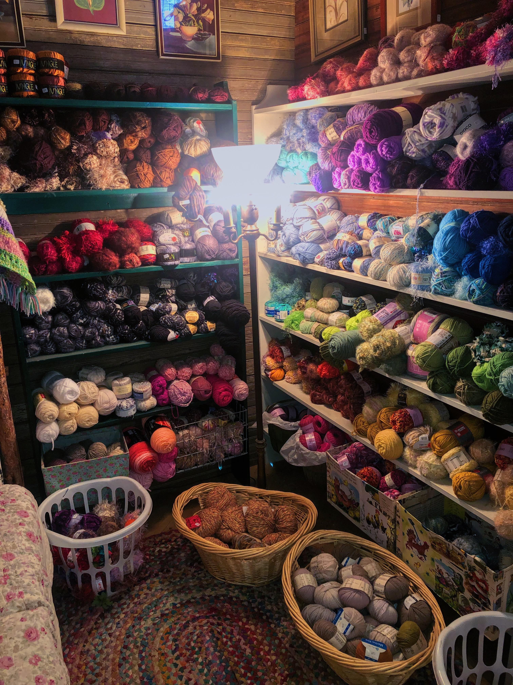

This is a webpage to display my artistic projects! I've been obsessed with crafting my whole life, and I've picked up a lot of disciplines along the way. My favorite artistic disciplines include:
This webpage was created for the class "Computing for the Web" taught by Mike Izbicki. If you are interested in seeing webpages from other students in the class, here are some more projects: